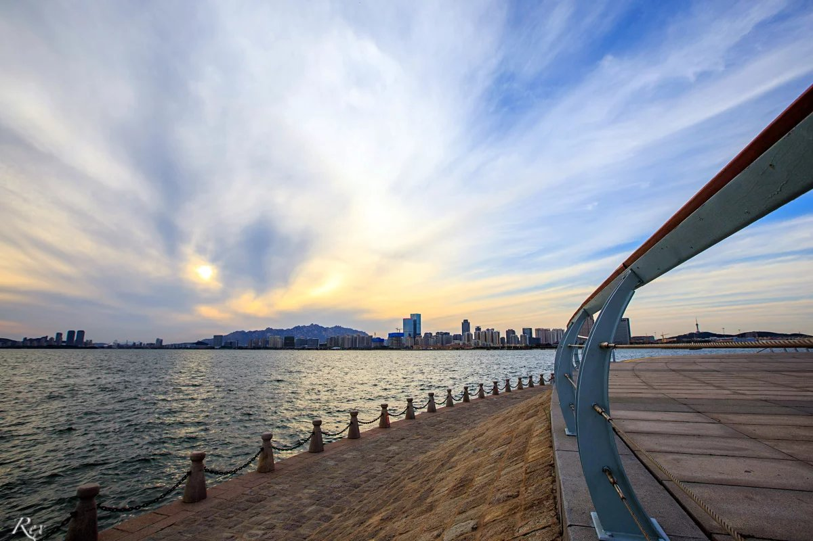
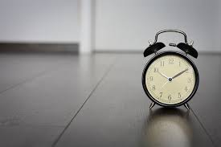
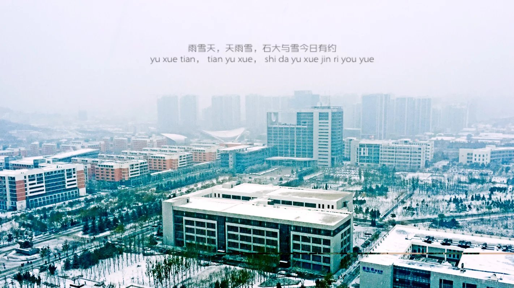
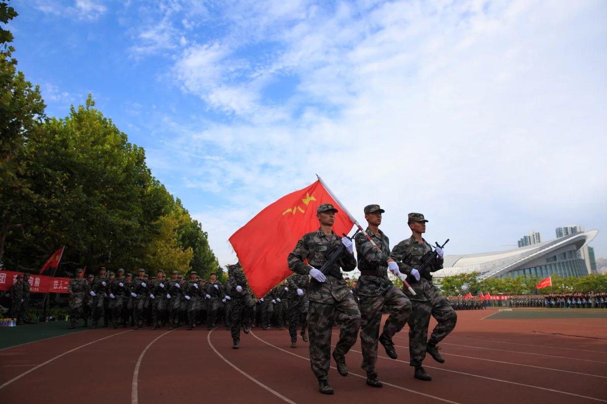
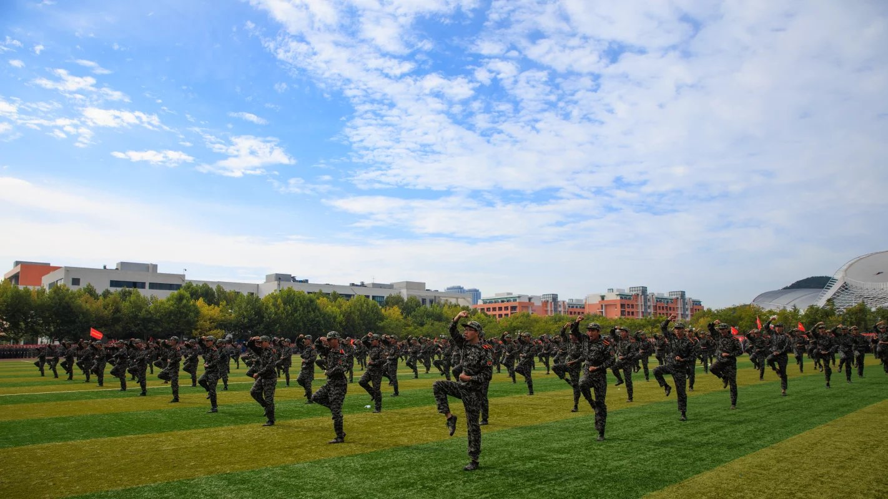
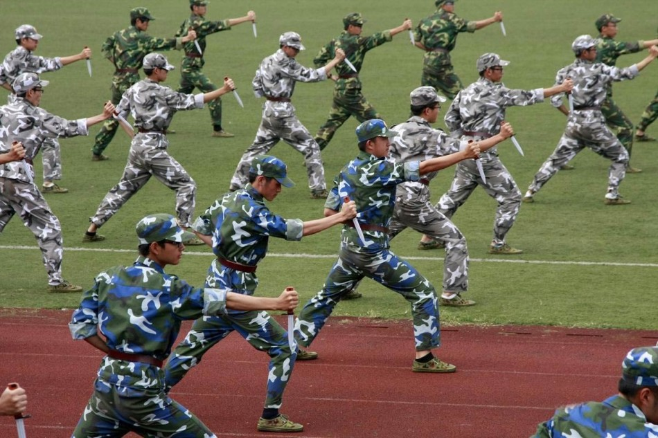
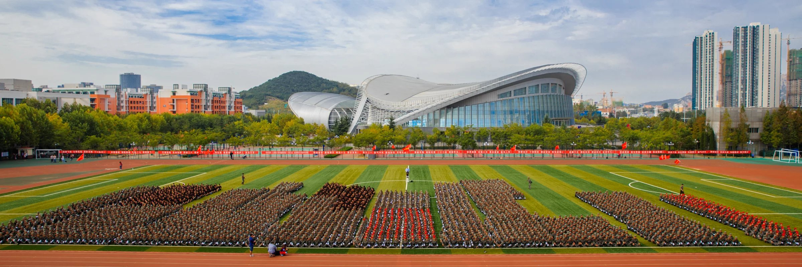

新生开学必备
必备文件
1、录取通知书(一般新生收到的是信封,里面的东西都要带上)
2、高考准考证
3、成绩单(有的话就带上)
4、本人档案(一定要有的)
5、 户口本复印件
6、 身份证及正反两面复印件 （在学校也会有地方复印，但是开学肯定人很多要排队，最好多备几份，以后还要用）
7、 银行卡 （除了通知书里交学费用的那一张之外最好再准备两张，中国银行的最方便）
8、 一寸、二寸彩色免冠照片 （多多益善，报名、填学籍卡、报名各种社团、入党、交简历、申请勤工助学等都要用）
9、 党、团组织关系证明、团员证 （一般都是在档案袋里，不过各省情况不一样，千万不要搞丢了）
10、 如果想申请贫困补助，就要带上县、乡、村三级证明（最好多备几份，以后可能还要用）
11、 如果中学阶段在奥林匹克竞赛（或类似的比赛）中获奖的话，最好把证书带上；有能证明自己在某一方面有一定潜力的任何性质的材料也尽量带着；在文艺方面有获奖的证书也行 (偷偷告诉你哦，大学里才艺双全的人是最受欢迎的)
12、 如果要转户口，那就要在生源地派出所办理相关的手续 （因地而异）
生活用品
1、牙刷、牙膏、漱口杯、毛巾（三条为宜）、挂绳或挂钩 （多备一些）
2、洗面奶、护肤品、洗发水 （最好准备大小两瓶）、护发素、沐浴露（同上）、沐浴球、擦澡毛巾之类
3、香皂或洗手液、洗衣液或洗衣粉、肥皂盒
4、剃须刀 （男生必备，胡子拉茬的给人印象不好哦）
5、盆子 （选能摞在一起的，节省占地空间，别让寝室太拥挤，一大一小两个就够用啦）
6、开水瓶2个 （容积尽量大一点，外壳质量一定要好，不然万一砸了烫伤了脚可就不好了）
7、抹布、塑胶手套 （这样洗衣服不会伤手，而且冬天用真的很贴心啊）
8、桶 (一般用不上，准备一个也行)
9、 衣领净或漂白剂 （以备不时之需）
10、 刷子 （刷鞋用）
11、 钢丝球 （吃过饭后饭盒来不及洗一放就是好几天的话就用它）
12、 塑料袋 (洗澡的时候便于把干衣服、湿衣服、沐浴用品等分开放)
13、 蚊帐、枕头、两张被单、两个枕套、一套被褥、一个夏凉被（这些学校都为大家准备好啦，不用担心）
14、 折叠小板凳（有没有都行，不过在宿舍里很方便）
建议：以上物品最好入学后买，路上带着挺不方便的
必备衣物
1、 自己平时比较喜欢的衣物（四季的外套、内衣、袜子等，鞋子，拖鞋，皮带；青岛这边冬天风特别大，所以最好准备几件防风比较好的衣物）
2、 衣架 （两札，根据各自衣服的不同买不同质量的衣架）
3、 晒衣夹 （一排，它主要是夹住衣架和晒衣绳，防止衣服吹跑的）
4、 可以晒很多袜子的环形衣架
5、 大、小夹子（大夹子晒被子时候用，小夹子可以放在书桌上随时用）
6、 晒衣服的撑杆 （这个有木有都行）
7、 挂钩若干 （可以贴墙的那种）
8、 樟脑球一类的防蛀防霉物品 （不要一次放太多，不然衣服穿出来熏死人了）
9、 除湿剂 （放在衣柜里）
10、 发夹、橡皮筋
11、 镜子、梳子
12、 各种SIZE的盒子（装杂七杂八的小东西，节省空间又方便找）
建议：除衣服外建议入学后购买
1、 水杯 （不怕摔的最好）
2、 饭盒 （有时候就是想在宿舍吃饭，用它可方便啦）
3、 筷子、勺子、叉子 （同上）
4、 削皮刀、水果刀 （不宜过长）
5、 榨菜、老干妈、果酱等 （食堂的饭菜很好吃呢，不过准备着也挺好。不过宿舍里禁止使用炊具哦）
6、 牛奶、饼干、小面包等开袋即食的东西（建议低糖低盐低脂高纤的）
7、 时鲜的水果（An apple a day keeps doctor away. 尤其是军训的时候，多吃一些真心不错）
建议：水果之类的入学后再买就行，学校周边有很多呢

饮食用具
1、 雨伞 （不要光求漂亮，质量要好，稍大一点哦）
2、 遮阳伞 (女生必备啊)
3、 包包 （大大小小的，自己看着办）
4、 青岛市的的地图和公车路线图 （可以到学校了买）
5、 家里的钥匙 （最好备一把，说不定什么时候就想回家啦）
6、 自行车 （可以考虑一下，骑车还是很方便的）
7、 坚固耐用的旅行包（这个真的少不了）
8、 办理一个公交卡 （很方便的）

外出旅游
1、 黑色中性笔 （必备，开学填很多表有用）
2、 便利贴 （很多东西辅导员、老师都只讲一遍，要记下来才不容易忘）
3、 U盘 （两个比较好，内存一大一小，Copy老师的课件和交作业等时候要用到，自己平时也会有一些要保留的文件的）
4、 笔袋 （真心方便）
5、 红色笔 (做标记就用它)
6、 铅笔、橡皮 (额，好像小学生)
7、 书包 ( 坚固耐用)
8、 文件夹 （装试卷、文件之类）
9、 书立
10、 笔筒
11、 固体胶、透明胶
12、 一套尺子（最好准备着吧）
13、 订书机
14、 环形针 （夹文件用）
电子产品
1、 手机 （不说你也不会忘的哈）
2、 耳机
3、 数据线
4、 手表 (建议买一个，考试的时候不允许带手机，要买机械的哦)
5、 电脑 (额，咱们学校大一新生不允许带电脑的)
6、 手机充电器、充电宝
7、 护眼台灯
8、 床头灯
9、 闹钟
10、 数码相机 （有的话带着也行，记录大学生活）
11、 开网号 ( 在这里特地说明一下，进入大学以后基本上所有的学都会开网号的，这样用无线网就很方便啦)

小工具类
1、 指甲剪
2、 小剪刀、小刀 （说不定什么时候就用上啦）
3、 小锁 （三四把就行啦，锁衣柜）
4、 多用插座1个 （插孔尽量多一些哦）
5、 手电筒 （晚上上厕所会用到）
6、 电池 （手电用的，酌情购买）
7、 针线包 （以后要靠自己了，军训裤子破了、裤腰大了都用得着）
8、 绳子 （用来挂毛巾）
9、 闹钟
建议：这些小物件入学后再买就行

医药卫生
1、 纸卷、纸巾 （一次性买一批，省时省力）
2、 花露水、风油精、清凉油等 （驱蚊止痒、治中暑都有用，绝对必备）
3、 治感冒、发烧药 （在宿舍里常备一些）
4、 棉签、云南白药等 ( 用以治疗摔伤、撞伤等意外事故 )
5、 洗洁精 （自己在宿舍里吃饭的话，洗餐具就会用到）
6、 消毒水 （喜欢就带吧）
与石大之约

必备物品
1、 防晒用品 （必备，在太阳底下暴晒感觉可不好啦）
2、 水杯 （容量要大！！）
3、 合适的鞋子 ( 一定要合脚，不然会很痛苦的)
4、 几双吸汗的袜子
5、 质量好、并且厚的鞋垫 （一定多备几双，否则军训踢正步会受不了的）
6、 各种营养品和干粮 （牛奶、芝麻糊之类，总之能补的尽量带上。每天军训真是又累又饿啊！）
7、 凉茶冲剂 （在太阳下站一整天后喝点这个消暑）
8、 防暑药
9、 花露水
10、 消炎药
11、 创可贴
12、 润喉片 （喊口号喊得口干舌燥啊）

军训内容
1、 队列练习是军训重头戏，它包括：立正、稍息、停止间转法、行进、齐步走、正步、跑步、踏步、立定、蹲下、起立、整理着装、整齐报数、敬礼、礼毕、跨立、半夜拉练等等。在军训过程中，像站军姿、走正步这样的简单动作会机械地重复几百次，知道你熟练为止哦。
2、 训练军体拳、匍匐前进、紧急集合、防火演练、队列汇操、编方队、合练、汇报表演等科目。
3、 执行内务条令：每天按照内务卫生的统一标准整理内务、定期或不定期进行内务检查、内务评比。
4、 执行纪律条令：规范集合、行进间和在报告厅和会场的行为。
5、 进行行为养成教育：遵守一日生活制度、与教官和教师打招呼等礼仪训练、进入办公场所的报告等科目训练。
6、 最激动人心的当然还是拉练，这时候大家就有机会去真正的训练场体验啦，真枪实弹哦！

必会歌曲
中国人民解放军军歌
学习雷锋好榜样
一支钢枪
打靶归来
团结就是力量
歌唱祖国
爱军习武歌

拉歌必备
1、 一班的，来一个！ 来一个，一班的！ 一二 快 快! 一二三 快 快 快！ 一二三四五 我们等的好辛苦 一二三四五六七 我们等的好着急 一二三四五七八 不唱你就快回家 一二三四五七九 你们到底有没有 有没有！
2、 东风吹， 战鼓擂， 要拉歌， 谁怕谁!
3、 要你唱， 你就唱， 扭扭捏捏不像样。 像什么， 像绵羊(咩……)/ 像什么 像姑娘(哎~~)
4、 时间， 宝贵! 要唱， 干脆! 杜绝， 浪费! 不唱， 撤退!
5、 大米饭， 小米饭， 男生不唱是软蛋 ! 红旗飘， 绿旗飘， 男生不唱是草包 !
6、 说不唱, 就不唱, 看你能把我怎么样! 不唱不唱就不唱! 看你把我怎么样!!!!
7、 群众歌曲大家唱， 你不唱歌我来唱。 要唱我们大声唱， 唱的不好请原谅!(唱歌)

军训是小鲜肉们入学第一门必修课，虽然会很苦、很累，但是军训过后大家就会发现留下的满满都是情义。希望大家珍惜！
